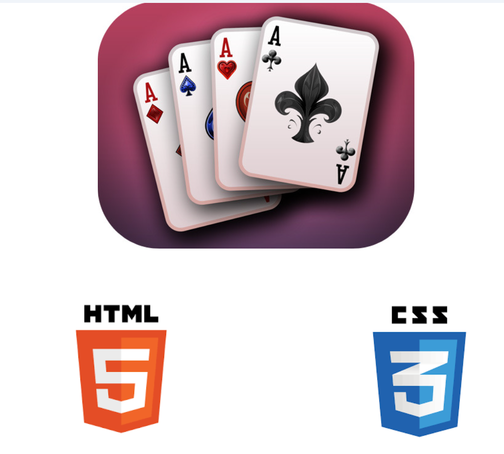

Cette SAE a été réalisée dans le cadre des Journées Portes Ouvertes. Elle avait pour but de créer un atelier interactif autour du CSS, et plus précisément du modèle Flexbox, à travers un jeu nommé FlexCard.
Apprendre et transmettre les bases du positionnement CSS avec Flexbox de manière ludique. Les participants devaient utiliser différentes propriétés Flexbox pour organiser des cartes selon des consignes croissantes en difficulté.
Les participants reçoivent un jeu de cartes représentant des propriétés Flexbox. À chaque niveau, ils doivent organiser les cartes dans le conteneur selon une consigne :
Grâce à cet atelier, j’ai consolidé ma compréhension des propriétés CSS Flexbox, notamment l’organisation d’un layout responsive et les comportements des éléments selon les axes. J’ai aussi appris à vulgariser des notions techniques pour un public non initié.
La principale difficulté a été d’expliquer les propriétés de manière simple et visuelle. Pour cela, nous avons utilisé une animation projetée. Il a aussi fallu bien préparer les consignes pour qu’elles soient progressives et motivantes.
